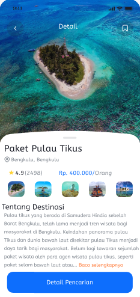
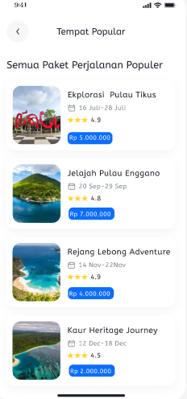
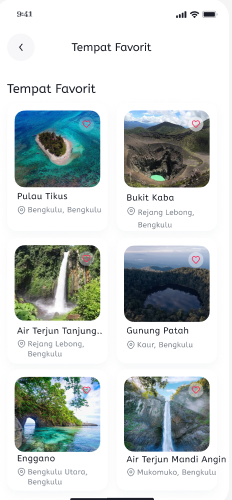
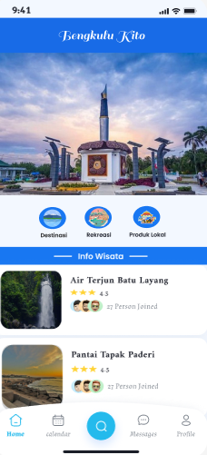

Bengkulens: Mobile UI/UX Design for Business Competition
Mobile
Application Design
UI/UX
User Centered Design
Figma
Design Platform


Situation (Background)
In order to participate in a strategically scaled business competition, our team was required to present a digital-based product innovation. However, a strong business idea cannot be well-communicated without proper visual validation. Therefore, a mobile application prototype named Bengkulens was needed to demonstrate the business solution in a concrete, interactive, and compelling manner before the judges and potential investors.
Task (Challenges & Responsibilities)
My primary responsibility in this project was to design the entire user experience (UX) and visual interface (UI) of the application from end to end. The greatest challenge was translating a complex business concept into a simple, inclusive, and easy-to-understand mobile application flow for the target market within a relatively short development timeframe.
Action (Strategic Steps)
The workflow was executed entirely using Figma by adopting a User-Centered Design (UCD) approach. The tactical steps I took included:
- Wireframing & User Flows: Developing initial low-fidelity layouts to lock down the information architecture and ensure the application navigation felt intuitive.
- Modern Interface Design: Creating high-fidelity visuals with an emphasis on the consistency of elements such as typography, icons, and a representative color palette.
- Responsive Component System: Leveraging features like auto-layout and master components in Figma for efficient revisions and a clean design structure.
- Interactive Prototyping: Crafting micro-interactions and dynamic page transitions to bring the application's functionality to life during presentations.



Result (Final Outcome)
Through the application of these methods, the project successfully delivered a mobile application prototype that is not only aesthetic but also possesses a high level of usability. The final design of Bengkulens successfully served as a key acceleration point that strengthened the team's business model presentation, left a positive impression on the competition judges, and validated the product's readiness to move into the subsequent development phase.